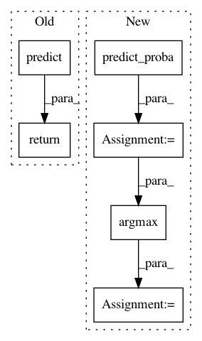

3e48bcfabca9fa430135cd1e6a737fc365943391,autosklearn/estimators.py,AutoSklearnClassifier,predict,#AutoSklearnClassifier#Any#,273
Before Change
The predicted classes.
return super(AutoSklearnClassifier, self).predict(X)
def predict_proba(self, X):
Predict probabilities of classes for all samples X.
After Change
return self._automl.fit(X, y, task, metric, feat_type, dataset_name)
def predict(self, X):
probabilities = self.predict_proba(X)
max_probability_index = np.argmax(probabilities, axis=1)
return max_probability_index
def predict_proba(self, X):
In pattern: SUPERPATTERN
Frequency: 3
Non-data size: 6
Instances
Project Name: automl/auto-sklearn
Commit Name: 3e48bcfabca9fa430135cd1e6a737fc365943391
Time: 2016-05-29
Author: a.domashnev@gmail.com
File Name: autosklearn/estimators.py
Class Name: AutoSklearnClassifier
Method Name: predict
Project Name: scikit-multiflow/scikit-multiflow
Commit Name: 5bf139b5a4312e6bfbe6a196e68fb261ef674368
Time: 2019-02-25
Author: jacob.montiel@gmail.com
File Name: src/skmultiflow/bayes/naive_bayes.py
Class Name: NaiveBayes
Method Name: predict
Project Name: scikit-multiflow/scikit-multiflow
Commit Name: 6496c605ad12f3eaac3939804ee8bef0b82a2692
Time: 2019-02-27
Author: aquancva@gmail.com
File Name: src/skmultiflow/bayes/naive_bayes.py
Class Name: NaiveBayes
Method Name: predict